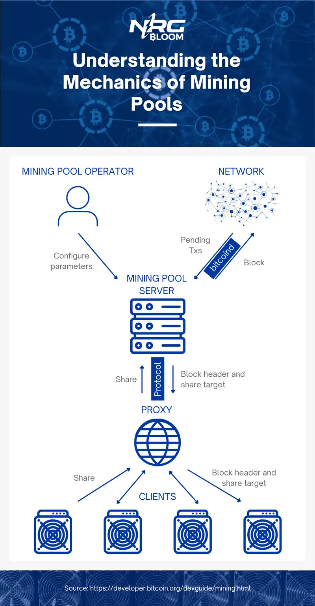
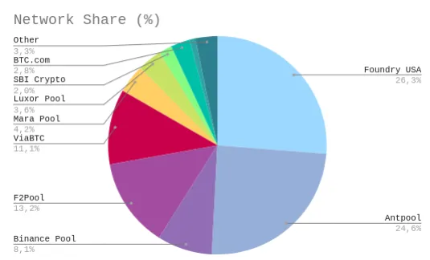
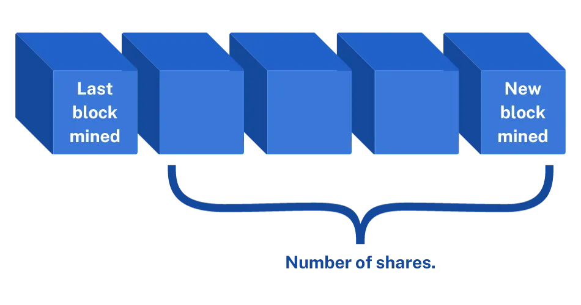
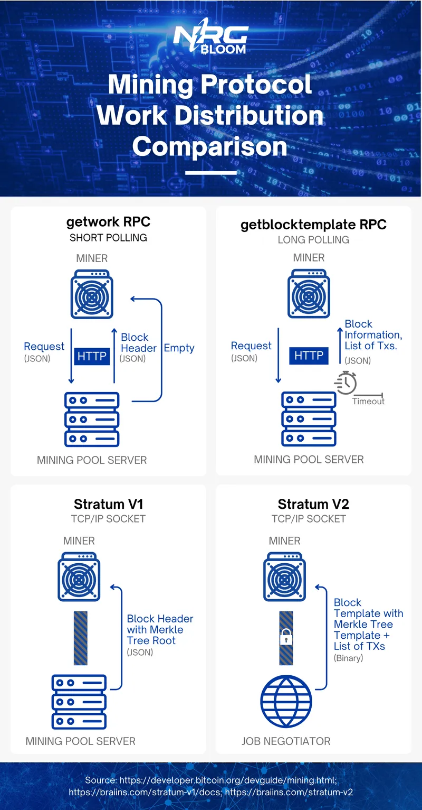
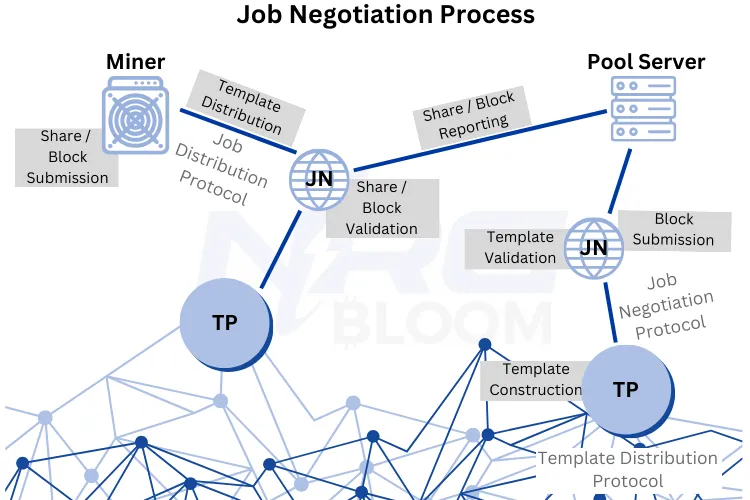

Deep Dive Into Bitcoin Mining Pools
Bitcoin mining has evolved dramatically since its inception, with mining difficulty skyrocketing as interest grew. This escalation gave rise to "mining pools" - collectives where miners combine resources to split costs and gain more frequent payouts.
Mining pools now control most of Bitcoin's hash rate and have become integral to profitable mining. By pooling computational power, miners can tackle the exponential difficulty growth and gain predictable rewards compared to solo mining.
This article explores critical mining pool concepts like reward models, top pools, protocols, and best practices for getting started. Whether you're a hobbyist or institution, understanding pools is essential to succeed in today's mining landscape.
Table of Contents
- Understanding Bitcoin Mining Pools
- Pros and Cons of Bitcoin Mining Pools
- Mining Pool Reward Models
- Prominent Bitcoin Mining Pools
- Evolution of Mining Protocols
- How to Join a Mining Pool
Understanding Bitcoin Mining Pools
Bitcoin mining is the process by which miners compete to verify and add new transactions to the Bitcoin blockchain. This competition involves solving complex cryptographic puzzles, and the first miner to successfully solve the puzzle earns a block reward. In Bitcoin's early days, when the network's hash rate was relatively low, ranging from kilohashes to megahashes per second, CPU and GPU mining were sufficient for this task.
However, as interest in Bitcoin grew, the mining difficulty increased exponentially to maintain the 10-minute block time. To keep up with this growing difficulty, miners transitioned to more efficient hardware like FPGAs and, eventually, ASICs. This transition led to a dramatic increase in the hash rate, from under 1 TH/s in 2010 to over 200 EH/s today(1). Alongside this ever-growing hash rate, the difficulty levels also grew significantly, from 1 in 2010 to over 50,000,000,000,000 today(1). As the mining difficulty escalated, individual miners saw their mining probabilities drop significantly. To address this challenge, mining pools, where miners combine their computational resources, emerged as a solution.
Mining pools serve as a collaborative network of individual miners, each combining their computational resources to collectively work towards finding a new block in a blockchain. Once a block is successfully mined, the reward is distributed among the pool members based on their respective contributed computational power or hash rate. This approach effectively minimizes the variability in reward distribution, ensuring a more consistent flow of rewards over time(2).
How do Mining Pools Work?
To understand how mining pools work, let’s break down the different components of mining pools.
Mining Pool Servers
Mining pool servers form the core infrastructure of a mining pool, delivering essential services to connected clients. Each mining pool operates its dedicated server, which miners remotely connect to. These servers play a crucial role in distributing mining tasks to clients and meticulously recording the shares submitted by miners(3).
Mining Pool Operators
Mining pool operators are the human element driving mining pools. They are the individuals or entities in charge of overseeing and managing the pool servers. Operators hold the responsibility of configuring essential parameters for the pool, such as setting the pool fee(3).
Proxy
While proxies are not obligatory components of mining pools, they offer numerous advantages. They can be set up either by clients or the server and serve as intermediaries between the centralized mining pool server and the distributed clients. Proxies simplify the client's connection to the server; instead of configuring each mining device individually with the pool's server details, miners can configure the proxy server once.
Depending on the proxy, they can also be configured with backup pools, automatically switching to these backups if the primary pool becomes unresponsive. Additionally, some proxies optimize mining operations by alleviating network congestion, reducing data usage, and lowering internet bandwidth costs, making them particularly valuable for clients with weaker internet connections. Furthermore, proxies can enhance cybersecurity by encrypting communication between the client and server, safeguarding against hash rate hijacking(4).
Bitcoin Mining Protocols
Mining software, also known as a mining protocol, encompasses the regulations, processes, and message structures that facilitate the coordination of miners and their interaction with the larger network. These protocols define how tasks are allocated to miners, guiding them in their quest for valid blocks or nonces. Furthermore, they govern how miners engage in communication with the mining pool and oversee other essential aspects of the mining process, and so forth.
Client
Clients are the mining rigs that establish connections with the mining pool server, whether directly or via a proxy.
Coordination of Bitcoin Mining Pool Components
Using bitcoind, mining pool servers establish communication with the Bitcoin peer-to-peer network to retrieve pending transactions. Following the guidelines and information outlined by the mining protocol, the pool server constructs a preliminary block known as a 'block prototype.' This prototype consists of a block header and a specifically set 'share target.' In contrast to solo mining, where miners must surpass the network's difficulty target, mining pool servers configure an intentionally lowered difficulty target, determined by the mining pool operator(5). This reduced difficulty target is often referred to as the 'share target'(6).
The mining pool server then forwards the block header, including the share target, to the client, utilizing a proxy if one is in use. Subsequently, the client engages in the Bitcoin mining process, striving to achieve a hash that surpasses the share target.
Whenever a client successfully surpasses the share target with a matching nonce, they transmit the victorious block header, along with the successful nonce, back to the server, accomplished through the proxy if it is part of the setup. This combination of a successful header and nonce is termed a 'share'. By submitting shares to the server, miners can demonstrate their contributed hash rate and their share of the mining effort. It's essential to note that most of the shares received by the pool server will not meet the criteria for blockchain inclusion. However, over time, the pool server will eventually receive a share that surpasses the network's original difficulty target.
Once this occurs, the pool server proceeds to compile a block by incorporating pending transactions awaiting confirmation. Subsequently, the server broadcasts the completed block to the Bitcoin Network through bitcoind. As a result of this successful mining operation, the mining pool becomes eligible for rewards. The pool then proceeds to distribute rewards to its clients based on the quantity of shares they contributed.

Pros and Cons of Bitcoin Mining Pools
The Advantages
Stable Income
Because mining pools centralize hashing power of multiple miners, they significantly increase their chances of successfully discovering a block, resulting in more frequent rewards for contributing miners. In contrast, individual miners face notably lower odds of finding a block independently, leading to sporadic income. To illustrate this point, consider one of the most efficient ASIC miners available as of this post, the Antminer S19 XP Hyd, with a hash rate of 257 TH/s. In the context of the current network hash rate, which stands at 440,795,259 TH/s, the chances of this individual miner finding a block amount to a mere 0.000058%. Statistically, it would take approximately 11,910 days, or roughly 32 years, for this miner to encounter a block under these conditions(7).
Lower Technical Barriers
Mining pools handle much of the technical complexity associated with mining, making it easier for newcomers to get started. Miners don't need to set up their own nodes, maintain mining software, or monitor the blockchain continuously.
Community and Support
Being part of a mining pool often provides access to a community of like-minded individuals who can offer support, share insights, and exchange information about the mining process.
The Disadvantages
Lower Rewards
When miners join a mining pool, their rewards are distributed among all pool participants based on their individual contributions. As a result, larger mining pools tend to allocate smaller individual rewards compared to smaller pools. However, it's worth noting that larger mining pools have a higher likelihood of solving blocks more frequently, translating into more frequent reward payouts for their participants.
Pool Fees
As Bitcoin mining pool operators provide services, they typically request compensation in the form of pool fees. These fees can vary, typically ranging from 0% to 4% of the rewards earned by miners. Additionally, some pools may impose payout fees when miners wish to withdraw their earned bitcoins from their mining pool account(8).
Rejected Shares
Pool mining may encounter certain challenges related to rejected shares, which can significantly impact profitability. There are four primary categories of rejected shares:
Stale shares result from late submissions, often due to high latency or connection issues. These occurrences are expected to be infrequent, typically around 1% of shares, and are considered normal.
When a share exceeds the target, it indicates a problem with your mining software that requires inspection or proper configuration. It's also possible that your mining software may not be compatible with the chosen Bitcoin mining pool.
Duplicate shares arise when the same share is submitted more than once, pointing to a potential bug in your mining software or incompatibility with the selected Bitcoin mining pool.
This category encompasses various types of rejected shares, usually indicating a bug within your mining software(32).
The rejection rate is calculated by dividing the total number of rejected shares by the total number of shares submitted. It's essential to recognize that different mining pools may have varying thresholds for rejecting work units, leading to potential variations in rejection rates depending on the specific requirements of each pool(34).
To minimize rejected shares, particularly stale ones, there are several key steps to take. Firstly miners can enhance their network connection to mitigate the occurrence of rejected shares, particularly stale ones. This can be achieved by prioritizing reliability over speed when selecting an internet connection for their mining hardware, with Ethernet being a preferable choice over Wi-Fi due to its enhanced stability. Opting for a mining pool in close geographic proximity to the mining equipment can help reduce latency and the frequency of stale shares. Furthermore, increasing the miner's hash rate can expedite share processing, narrowing the gap between solving and submitting shares. Miners interested in assessing their connection's latency to the current mining pool can do so by opening the Command Prompt as an Administrator and using the "ping" command, followed by the pool's URL, to measure communication speed and identify potential issues(33).
Downtime
Similar to any other server, mining pool servers can experience downtime due to various factors, including maintenance, power outages, cybersecurity issues, or technical glitches. Temporary connection problems may also occur when there is significant latency between the pool's server and the mining rig. When Bitcoin mining pools are inaccessible, clients cannot establish a connection with the pool, and as a result, they are unable to contribute their computational power. This downtime can potentially lead to profit loss if a block is missed due to the mining pool being offline(9).
Certain proxies provide a service that detects when a client's primary mining pool is unavailable and automatically connects to a pre-configured backup pool. This functionality is designed to mitigate any adverse effects on profits.
Reduced Privacy
Mining pools often require miners to provide their wallet addresses, making it easier to track earnings and transactions. This can compromise the privacy of miners who prefer to remain anonymous.
Fraud and Dependence on Pool Operator
Miners within a pool depend on the pool operator to oversee the infrastructure and ensure the equitable distribution of rewards. However, there exists a risk of the operator acting dishonestly or engaging in unethical practices, such as withholding rewards or suspending withdrawal capabilities. Additionally, there have been instances where fraudulent mining pools have been created to scam interested miners. Therefore, conducting thorough research on a pool of interest and making an informed decision before joining is of paramount importance.
Self-Prioritizing Mining Practices
One drawback of mining pools is the potential for dishonest practices. In essence, some miners and mining pools exploit a vulnerability in the system, gaining an unfair advantage over their competitors. By withholding crucial information or even feeding misleading data to rival miners, these dishonest actors can effectively disrupt the mining process and compromise the integrity of the entire network.
Selfish Mining
Mining pools aggregate the computational power of numerous individual miners. When a mining pool discovers a new block, it has the option to employ selfish mining strategies. Instead of immediately broadcasting the block to the network, the pool withholds it. During this time, the pool continues mining on top of the withheld block privately. While the rest of the network is unaware of this new block, they continue to mine on the old block, wasting computational resources. This strategy is more viable for mining pools because they possess a significant share of the total network hash power. By acting as a unified entity, they can increase the chances of the selfishly mined chain becoming longer than the public chain. Once the private chain surpasses the public one, the selfish mining pool releases its private blockchain, causing the network to accept it as the valid chain. This gives the pool an unfair advantage and increases its mining rewards(39).
Validationless Mining (SPV Mining)
When a mining pool identifies a new block, it immediately transmits the block header hash to its connected miners. These miners, thanks to the structure provided by the mining pool, don’t need to wait for the entire block data; they can start working on a new block using only the block header hash. This process, known as validationless mining or SPV mining, enables miners to mine without validating the entire blockchain, compromising the security and integrity of transactions. By skipping proper transaction verification, there's a risk of including invalid transactions or even enabling double-spending attacks(39).
Spy Mining
Mining pools consist of individual miners, often referred to as hashers, who work on behalf of the pool. When a mining pool discovers a new block, it distributes the block header hash to all connected miners, including potential spy miners. Spy mining occurs when these competing miners or even rival mining pools connect to a pool, receive the block header hash, and decide to mine independently. By leveraging the information provided by the mining pool, these spy miners can start mining on top of the new block without the need for the full block data. This clandestine mining, facilitated by the mining pool’s infrastructure, allows competitors to gain an edge by beginning their mining efforts sooner than if they had waited for the entire block data. This practice is widespread and creates an environment where miners compete not just against the broader network but also against each other, with mining pools serving as the focal point of this competition(39).
Centralization
The widespread adoption of mining pools has played a significant role in the centralization of Bitcoin mining. As mentioned earlier, mining rigs rely on specific mining software or protocols, with pool mining often employing the Stratum protocol. In the initial iteration of this protocol, known as Stratum V1, mining pools possess the authority to arrange pending transactions within a block template. Consequently, individual miners lose the autonomy to select the transactions they validate(10).

This centralization introduces the inherent risk of a 51% attack, wherein a coalition of miners commands over 50% of the total mining hash rate. Such control theoretically grants these entities the power to manipulate the blockchain. Since validated blocks require consensus from other miners, malicious participants can collectively reject these blocks, hindering their confirmation and inclusion in the blockchain. This scenario is sometimes referred to as a 'transaction denial of service.' Additionally, malicious actors can execute nefarious transactions, sending coins to recipients and then leveraging their mining power to backtrack in the blockchain to a point before these transactions occurred. Through blockchain forking, they can establish an alternative version without these malicious transactions and enforce its acceptance. In this alternate blockchain, the fraudulent transactions cease to exist, leading to double-spending where the same coins are used twice.
However, it's crucial to note that while the potential for a 51% attack on the Bitcoin Blockchain is acknowledged, it remains highly improbable due to the network's immense size. In 2014 one mining pool, Ghash.io briefly controlled 51% of the total hash rate. Luckily they didn’t abuse this power, but this was a wakeup call for many miners that left the mining pool shortly after(11). As the network continues to expand, the feasibility of an individual or entity amassing sufficient computational power to surpass all other participants becomes increasingly implausible(12).
Mining Pool Reward Models
There are multiple different reward models pools can choose from to reward their clients, but the vast majority of the pools operate on a PPS, FPPS, PPS+, and PPLNS basis.
PPS
Pay Per Share. In this method, rewards are based on the number of shares contributed by a miner, regardless of whether the mining pool successfully mines a block. These rewards typically include a fixed payout: a portion of the block subsidy. While this method ensures a consistent payout, it is a more risky strategy for the pool operators and often entails higher pool fees(13).
Suitable for: Miners who pursue stable income.
FPPS
Full Pay Per Share. Similar to PPS, this model offers rewards that include a proportionate share of the block subsidy along with a portion of the standard transaction fees calculated over a specified time frame(13).
Suitable for: Miners who pursue stable income.
PPLNS
Pay Per Last N Shares. Under this model, clients receive rewards based on the number of shares they contributed within a specific time frame, starting from the moment a block is discovered. Consequently, clients only receive rewards when the mining pool successfully mines a block. This approach is particularly beneficial for miners who have stable, long-term connections to a single pool(14).
Suitable for: Miners who can take a certain risk of low luck.

PPS+
Pay Per Share +. PPS+ combines elements of both PPS and PPLNS. Miners receive a fixed block reward, which includes a portion of the block subsidy, based on the PPS model. Additionally, the transaction fee rewards are distributed using the PPLNS method once a block is successfully mined(15).
Suitable for: Miners who pursue stable income.
Score or Bitcoin Pooled Mining
Also known as the 'Slush' approach, this system assigns decreasing importance to older shares from the beginning of a block round compared to more recent shares. This mechanism effectively mitigates the potential for miners to exploit the mining pool system by rapidly switching pools within a single round(2).
Suitable for: Miners looking for a balanced approach between stability and preventing exploitation.
Other Models
Prop.
In the Proportional approach, when a block is discovered, the reward is distributed among all workers in proportion to the number of shares each worker has contributed(13).
Suitable for: Miners looking for a straightforward method where rewards are directly proportional to the number of shares contributed.
Geometric Method
When a participant submits a share, their score for the round increases. The score for each share diminishes as more shares are submitted, reflecting a decay factor. At the end of the round when a block is found, each participant receives a payout. This payout is determined by their score relative to the total score of all participants in the round. This time decay element was introduced to prevent pool hopping(16).
DGM
Double Geometric Method.This system merges features from both PPLNS and the geometric method. Instead of maintaining a complex share history, it utilizes a scoring system for miners based on their contributions. When a miner submits a share, their score increases, and they receive a reward proportionate to their score. In the event that a share leads to a valid block, miners receive additional rewards based on their score, while the remaining portion is directed to the pool operator(17).
SMPPS
Shared Maximum Pay Per Share. In this system miners contribute shares to the pool, and each share is credited with 1/D (where D represents the current Bitcoin difficulty). These credits accumulate for each miner as per their submitted shares. When a block is successfully mined, the pool calculates the total unpaid Pay-Per-Share credits. If the pool's earnings from this block are sufficient to cover all the unpaid credits in full, miners receive their credits immediately at the full 1/D rate.
However, if the pool's earnings from the block are not enough to cover all the unpaid credits, miners are paid proportionally to the available funds. The remaining pool funds that couldn't cover the full 1/D rate accumulate and are set aside for future payouts(20).
ESMPPS
Equalized Shared Maximum Pay Per Share. ESMPPS strives to maintain uniform rewards for all shares, regardless of when they were uncovered or any potential downtime. When a miner discovers a share, it enters a list with a 0% payout status. If the pool has reserves from previous rounds with lower payouts, these shares are settled immediately; otherwise, the pool awaits block confirmation. Once confirmed, the pool identifies shares with the lowest payout percentages and allocates funds from the block to enhance their rewards. This process continues, progressively increasing the payout percentages for all shares, ultimately reaching nearly 97% of what plain PPS would have paid. The system's main aim is to minimize payout variability, providing miners with consistent earnings(18).
POT
Pay On Target. POT, or Pay On Target, is a payout system akin to PPS (Pay Per Share) but with a distinctive twist: miners are rewarded more generously for shares of greater difficulty, offering significant incentives to those who successfully find a block(19).
PPLNSG
Pay Per Last N Groups. Similar to PPLNS, but this method organizes shares into "shifts" or “groups”, with the entire group being rewarded together as a unit(13).
RSMPPS
Recent Shared Maximum Pay Per Share. Similar to SMPPS, this method shares some common features but places a priority on rewarding the most recent miners before others(13).
P2Pool Approach
P2Pool establishes a new blockchain with a modified difficulty level to achieve a new block discovery approximately every 30 seconds. These blocks, integrated into the P2Pool blockchain, known as the "share chain," are identical to those that would be included in the Bitcoin blockchain, albeit with a lower difficulty threshold. Miners get shares by finding blocks of the share chain. Once one of these share chain blocks also meets the real Bitcoin Network difficulty, the reward is distributed among the most recently contributed shares within this share-blockchain(13)(20).
Prominent Bitcoin Mining Pools
Foundry USA
Foundry, a subsidiary of Digital Currency Group (DCG), was established in late 2019 to address the growing institutional demand for improved access to capital, operational efficiency, and transparency in the digital asset mining and staking sector. Headquartered in Rochester, New York, Foundry swiftly ascended to the top of the mining pool landscape, currently commanding a substantial 26.5% market share and boasting an impressive hashrate of up to 120 EH/s(22)(23).
The pool employs the Full Pay-Per-Share (FPPS) payout method and maintains a minimum payout threshold of 0.001 BTC for Bitcoin (BTC) miners, ensuring that payouts are initiated only once a miner accumulates at least this amount(22)(23).Although Foundry USA still mostly uses the Stratum V1 protocol, it has already tested the Stratum V2 protocol(47).
Foundry is dedicated to meeting the institutional demand for enhanced capital access, operational efficiency, and transparency in the digital asset mining and staking sector. They have implemented stringent Know Your Customer (KYC) protocols to bolster security and compliance for their clients.
One of Foundry's standout features is their innovative mining equipment financing program, allowing miners to access cutting-edge hardware without significant upfront costs. Additionally, Foundry offers robust customer support services to assist miners with inquiries and concerns.
As a subsidiary of DCG, Foundry extends its services beyond financing, offering options such as colocation, hosting, and equipment management. Foundry prioritizes the security of its miners and their assets by implementing various safeguarding measures and maintaining secure infrastructure using industry-standard practices, including servers, firewalls, and encryption technologies.
Foundry USA pool’s unique coinbase signature is: “/Foundry USA Pool #dropgold/”.
Antpool
AntPool, founded in 2013 by Bitmain Technologies, is a prominent Chinese mining pool renowned for its impressive hash rate of around 105 EH/s and a substantial network share of 24.57%. This pool caters to miners interested in various cryptocurrencies, including Bitcoin, Bitcoin Cash, Ethereum, Litecoin, and more.
AntPool employs two primary payout methods to distribute Bitcoin rewards to miners: FPPS and PPLNS. For FPPS payouts, a flat fee of 4% is charged, while PPLNS payouts come with a 0% fee(22). Miners should be aware that both methods have a minimum payout threshold of 0.001 BTC. Upon reaching this threshold, payouts are typically processed automatically and sent directly to the miner's Bitcoin wallet. Moreover, AntPool supports multiple payout options, including PayPal, bank transfers, and WeChat Pay(25)(26).
The mining community has lauded AntPool's exceptional customer service for its promptness, efficiency, and helpfulness in addressing concerns and providing solutions. The team behind AntPool is known for its quick response times, clear communication, and unwavering commitment to delivering outstanding user support.
Antpool's mining software was designed to be easy to install and configure, and the company provides detailed instructions and tutorials to help miners get started. Features such as mining modes and difficulty settings are available to help miners optimize their performance and earnings.
Antpool takes several measures to protect its miners' earnings and personal information. The company employs advanced encryption technologies to secure all transactions and communication between miners and the pool. It has strict access controls and monitoring systems to prevent unauthorized access to its systems. Antpool also has a strict privacy policy to protect miners' data and is committed to providing users with a secure and reliable mining experience(26).
Antpool’s unique coinbase signature is: "Mined by AntPool".
F2Pool
F2Pool, established in 2013 and headquartered in China, stands as a pioneering force in the global cryptocurrency mining landscape. With a commanding network share of 13.24% and a controlled hash rate of 53.33 EH/s, F2Pool is the largest mining pool worldwide, catering to over 40 digital currencies, including the prominent Bitcoin. Commonly known as "Discus Fish", F2Pool distinguishes itself through its commitment to providing mining services in multiple languages, including English, Spanish, Russian, Simplified Chinese, and Traditional Chinese.
F2Pool adopts a flexible payout approach, offering both FPPS and PPLNS methods, with fees of 4% and 2% respectively. Miners benefit from a minimum withdrawal threshold of 0.005 BTC, ensuring daily automatic payouts once this limit is reached, enhancing their liquidity and ease of access to earnings.
F2Pool's global impact is underscored by its widespread language accessibility, providing a user-friendly interface for miners from diverse linguistic backgrounds. As a trailblazer in the cryptocurrency mining industry, F2Pool continues to empower miners worldwide, facilitating their participation in the evolving digital currency landscape(22)(24)(29)(30).
F2Pool’s unique coinbase signature is: “🐟 /F2Pool/”.
ViaBTC
Founded in China, ViaBTC stands as one of the leading mining pools with a market share of 11.11% and a controlled hash rate of 44.76 EH/s. What sets ViaBTC apart is its commitment to providing diverse and flexible mining solutions, accommodating a wide array of cryptocurrencies including Bitcoin.
ViaBTC embraces a pioneering payout approach, offering multiple methods tailored to miners' preferences. The PPS+ mode ensures block subsidies are paid out efficiently following the PPS method, with a fee of 4%. Additionally, transaction fee rewards are distributed using the PPLNS method, featuring a 2% fee. ViaBTC also offers the PPLNS mode where the entire block reward is distributed following the PPLNS method with a 2% fee. Lastly, miners with substantial hash rate also have the option to solo mine through ViaBTC with a nominal fee of 1%, ensuring that block rewards (minus the fee) go directly to the miner who discovers the block.
ViaBTC introduces the Smart Mining feature, offering miners convenience and profitability. With options like One-click Switch and Classic Smart Mining, miners can easily switch between mining different cryptocurrencies without tedious configuration. Classic Smart Mining automatically selects the most profitable coin based on the miner's settings, maximizing earnings while minimizing effort.
ViaBTC prides itself on its multilingual interface, supporting languages such as Chinese, Korean, Japanese, English, Russian, and Spanish. This inclusive approach ensures seamless communication and accessibility for miners from diverse linguistic backgrounds(24)(31).
ViaBTC’s unique coinbase signature is: "/ViaBTC/Mined by {username}/".
Binance Pool
Binance Pool, boasting a significant market share of 8.14% and a robust hash rate of 34,401.33 PH/s, stands out as a leading player in the cryptocurrency mining arena. This trusted platform supports mining for a variety of cryptocurrencies, including Bitcoin, Ethereum, and Bitcoin Cash, offering users the flexibility to switch between coins as they prefer.
Miners opting for Binance Pool enjoy a plethora of benefits. Notably, Binance, a well-established name in the cryptocurrency industry, ensures that miners' rewards are paid out promptly and securely. With a mere 4% fee and the implementation of the FPPS payout method, Binance Pool provides a cost-effective and efficient mining experience. What sets Binance Pool apart is its absence of a minimum payment threshold, allowing miners to receive payouts regardless of the earned amount.
For users wielding a high hash rate, Binance Pool VIP membership opens doors to exclusive advantages. These privileges include reduced rates, access to Binance Pool Savings, risk-free mining opportunities, enhanced earnings, and the independence of managing nodes autonomously(22)(24)(28).
Binance Pool’s unique coinbase signature is: "/Binance/".
MARA Pool
Mara Pool, established by Marathon Digital Holdings, Inc., stands as a prominent player in the American digital asset technology landscape. Marathon Digital Holdings Inc., an esteemed American digital asset technology company, specializes in Bitcoin mining, reflecting its dedication to the dynamic world of cryptocurrencies.
Boasting a significant network share of 4.23% and a controlled hash rate of 17.09 EH/s, Mara Pool is a robust contender in the cryptocurrency mining arena. Mara Pool distinguishes itself through its steadfast commitment to regulatory compliance.
The pool diligently adheres to U.S. regulations, incorporating stringent anti-money laundering checks and diligently following the sanction list of the Office of Foreign Asset Control. Notably, Mara Pool has achieved the notable milestone of mining a Bitcoin block fully compliant with U.S. regulations. This involves excluding transactions from entities believed to be sanctioned by the U.S. Department of Treasury or associated with dark web activities, showcasing Mara Pool's dedication to legal and ethical mining practices(24)(35)(36)(37).
Mara Pool’s unique coinbase signature is: “/MARA Pool/”.
Luxor Pool
Luxor Pool, introduced by Luxor, stands as a trailblazer in the competitive realm of cryptocurrency mining. With a network share of 3.55% and a controlled hash rate of 14.3 EH/s, Luxor Pool has carved a niche for itself in the industry. What sets Luxor apart is its innovative approach to mining, focusing on empowering miners and investors alike(22).
Luxor Pool offers a diverse array of services, including automated cryptocurrency mining tax reporting, subaccounts, and a developer API. These features enhance the overall mining experience, providing convenience and efficiency to miners.
One of Luxor's pioneering offerings is its hash rate derivatives, a groundbreaking product that provides miners with a unique opportunity to secure a predictable revenue stream. By selling at a profitable hash price, miners can establish a short position, allowing them to determine their revenue per unit of hash rate. This innovative approach gives miners unprecedented control over their earnings, fostering a sense of stability and financial security in the volatile world of cryptocurrency mining. Simultaneously, buyers can participate in Bitcoin mining without the complexities of owning or managing physical mining equipment, assuming a long position and simplifying their investment journey(40)(41).
Luxor Pools's unique Coinbase signature is: "/Powered by Luxor Tech/".
BTC.com Pool
With a respectable network share of 2.83% and a controlled hash rate of 11.94 EH/s, BTC.com Pool stands as a significant player in the competitive crypto mining arena(22).
BTC.com Pool operates on the pioneering FPPS payout method, a groundbreaking concept introduced by the pool itself. This method ensures miners are fairly rewarded for their contributions. While the pool charges a 4% fee, it maintains a reasonable payment threshold of 0.005 BTC, fostering accessibility for a diverse range of miners(43)(44).
BTC.com Pool’s unique coinbase signature is: "/btccom/”.
SBI Crypto Pool
SBICrypto Pool, a stalwart in the crypto mining landscape, boasts a commendable network share of 1.96% and a controlled hash rate of 8.27 EH/s. While its market presence might not be the largest, it exemplifies mining excellence with a reach spanning Asia, Europe, and North America.
Operating on the principles of fairness and inclusivity, SBICrypto Pool offers a dual payout system: FPPS and PPLNS. With a modest minimum payout threshold of 0.00000546 BTC, SBICrypto ensures accessibility for miners of all scales.What makes SBICrypto Pool unique is its flexible fee structure, tailored to accommodate varying miner contributions. Ranging from 1.5% to 0.13% for FPPS and from 0.75% to 0.05% for PPLNS, these fees reflect a commitment to equitable partnerships, aligning charges with individual mining contributions(22)(42).
SBY Crypto Pool’s unique coinbase signature is: "/SBICrypto.com Pool/".
Braiins Pool
With a network share of 0.87% and a controlled hash rate of 3.68 EH/s, Braiins Pool stands as a testament to the enduring spirit of innovation in the crypto mining sphere(22). Braiins Pool has a rich history, marking its origins as Bitcoin.cz mining in 2010, the pioneer mining pool later rebranded as Slush Pool after the introduction of the Stratum V1 protocol by Marek "Slush" Palatinus in 2012. In 2022, it evolved once more into Braiins Pool, becoming the primary pool utilizing the advanced Stratum V2 Protocol(45)(46).
Braiins Pool operates on a score-based payout method, ensuring fair compensation for miners' contributions. With a modest 2% pool fee and a minimum payout threshold of 0.001 BTC, Braiins Pool offers an accessible and equitable platform for miners. Additionally, the pool employs a payout fee of 0.0001 BTC, applicable only for payouts under 0.01 BTC, demonstrating a commitment to transparent and reasonable fee structures(48)(49).
Braiins Pool’s unique coinbase signature is: “/slush/”.
Evolution of Mining Protocols
getwork RPC
In its early stages, Bitcoin mining demanded miners to directly engage with the Bitcoin protocol through full nodes. To streamline communication between miners and the protocol, an open-source protocol called "getwork" was adopted. This solution facilitated standalone miners' entry into mining activities(50).
Initially utilized by both solo miners and mining pools post their inception in 2010, the getwork mining protocol was pioneering. It essentially provided miners with block headers to solve. The getwork RPC utilizes short polling and operates over the HTTP protocol. Polling in this context refers to miners checking for new data, specifically block headers in the case of the getwork RPC protocol. Short polling involves miners periodically sending requests to the server (Bitcoin Network or mining pool server) to inquire about new block headers. The server responds immediately, providing either fresh data or a message indicating that no new information is available. This cycle repeats, with the client continuously polling the server for updates(51)(53).
While short polling is easy to implement, it has drawbacks. The continuous generation of HTTP requests can lead to inefficiency by consuming unnecessary bandwidth and server resources. As Bitcoin mining gained popularity, the getwork protocol exacerbated bandwidth issues. Miners required substantial data, causing servers to handle increased traffic, resulting in inefficiency and sluggishness(50).
getblocktemplate RPC (BIP22)
In 2012, the introduction of the getblocktemplate RPC protocol marked a pivotal moment in Bitcoin mining. It represented a notable improvement over the getwork RPC protocol, offering key advantages. Unlike getwork, getblocktemplate introduced a decentralized approach to Bitcoin mining, revolutionizing the mining process. Additionally, it effectively tackled the latency problems associated with short polling, enhancing the overall efficiency of mining operations.
Unlike the original getwork mining protocol, which merely handed out block headers for miners to solve without revealing the block's contents, getblocktemplate shifted the power dynamic. Under the old system, miners operated blindly, their ability to influence transaction acceptance transferred entirely to the pool operator. Getblocktemplate, however, empowered miners. It allowed them to take charge of block creation while still adhering to the rules set by the mining pool. Pools could establish participation guidelines, but miners were no longer left in the dark. They had the freedom to select which transactions to include in their mining process(52).
This new approach furnished miners with comprehensive information, including a detailed list of transactions suggested by bitcoind or the mining pool for inclusion in the block. The miner is then responsible for constructing the Merkle tree root with the transactions it wants to include(5).
Furthermore, the getblocktemplate RPC protocol incorporated long polling into the mining process. In long polling, miners initiate an HTTP request to the mining pool server. Instead of an immediate response, the server keeps the request open until new data for mining a block becomes available or a timeout period expires. Upon new data readiness, the server sends the updated information in response to the client's request. The client promptly sends another request, and the cycle continues. This innovation effectively mitigated the latency and bandwidth challenges encountered with the getwork RPC protocol(53).
Despite these advantages, direct adoption of the getblocktemplate protocol faced challenges, particularly due to the concurrent release of Stratum V1 around the same time.
Stratum V1
As pooled mining gained traction, the shortcomings of the getwork protocol became increasingly evident. In response the Stratum V1 protocol was released in 2012. Stratum V1 was founded on the idea that HTTP, designed for website browsing where clients request specific content, was not the most efficient way for pooled mining. Servers in pooled mining are already aware of clients' needs, allowing for more controlled and efficient communication.
While the getblocktemplate protocol addressed certain problems linked with short polling, it's important to note that long polling still comes with its own set of limitations. Firstly, it necessitates the maintenance of distinct connections between clients and servers, a task that becomes daunting in extensive applications. This complexity often results in challenges related to load balancing, particularly in large-scale scenarios. Secondly, when long-polling connections are terminated, clients initiate simultaneous reconnections, causing a surge in data packets that can overwhelm the network. This situation not only leads to service disruptions but also poses cybersecurity risks, as distinguishing these reconnections from Distributed Denial of Service (DDoS) attacks can be tricky. Lastly, the adoption of long polling complicates the architecture of mining pools. Managing a multitude of persistent connections and handling reconnections demands intricate server configurations and meticulous upkeep. This heightened complexity can compromise the reliability of the pool service, potentially causing downtimes and delays in providing mining tasks to miners(54).
This is precisely why the Stratum V1 protocol opts for a different approach. Instead of using HTTP to communicate between miners and Bitcoin mining pool servers, Stratum V1 utilizes TCP sockets to maintain a continuous connection with each miner. By keeping the connection open, the server can send mining jobs to miners at any time without the need for miners to make repeated requests. This persistent connection significantly reduces network latency and improves the overall efficiency of the mining process. In essence, Stratum V1's use of continuous TCP connections simplifies communication, reduces network strain, and enhances the reliability and speed of mining tasks, making it a more efficient choice for mining operations(54).
One significant advantage of Stratum V1 over the getblocktemplate RPC lies in miners' ability to locally modify the coinbase transaction. Unlike the limited approach of getwork RPC, where miners could only iterate through nonce values to find a valid hash, getblocktemplate offered more information about the block template but still required miners to construct the entire block locally. This process was computationally intensive and made it difficult to modify specific parts of the block, such as the coinbase transaction, without reconstructing the entire block header.
In contrast, Stratum V1 was specifically designed to enhance miners' flexibility and control in the mining process. By enabling miners to easily alter the coinbase parameter, Stratum V1 empowers them to explore diverse variations of the block header. This flexibility increases the likelihood of finding a valid solution. Importantly, this modification can occur without the need to reconstruct the entire block, leading to a reduction in processing time and latency. It's worth noting that changing the coinbase parameter doesn't impact where the coinbase transaction's block reward is paid out. This enhancement in Stratum V1 significantly streamlines the mining process and optimizes miners' efficiency(54).
While Stratum V1 does have a significant drawback compared to the getblocktemplate protocol, namely the loss of the decentralization aspect where miners can select transactions for inclusion in their block, due to the preconstructed merkle tree miners receive. Despite this limitation, many mining pools and individual miners have chosen Stratum V1 over other protocols, making it a preferred option in the mining landscape.

Stratum V2
Stratum V2 was developed in response to critical security concerns and the escalating centralization problem observed within Bitcoin mining pools, as well as other issues stemming from the previous Stratum V1 protocol.
The first major challenge addressed by Stratum V2 is security. Stratum V2 implements AEAD encryption, ensuring that sensitive data remains protected and immune to potential decryption attempts by malicious third parties. This security enhancement helps prevent issues such as hashrate hijacking(56).
Secondly, Stratum V2 significantly improves the efficiency of data transfer and reduces latency in the mining process. Unlike earlier protocols, which relied on text-based JSON format for communication (whether through short polling, long polling, or TCP sockets), Stratum V2 employs a binary format that drastically reduces data size, leading to lower bandwidth consumption. Furthermore, Stratum V2 eliminates unnecessary messages, further reducing network traffic. This reduction in data transmission not only enhances overall performance but also lowers infrastructure costs for all participants(56).
A third critical issue tackled by Stratum V2 is the centralization problem associated with Bitcoin mining pools. It achieves this through the introduction of essential components and subprotocols: the Template Provider, Job Negotiator, and three sub-protocols—Job Negotiation Protocol, Job Distribution Protocol, and Template Distribution Protocol(56). Here's how these components interact:
Template Providers
These are nodes connected to the Bitcoin network, serving as miner-side proxies. They create customized block templates, including a Merkle tree template and a list of transactions. Miners can use these templates to construct the final Merkle tree root. Template Providers utilize the Template Distribution Protocol to fetch information from bitcoind(57).
Job Negotiators
Operating on the pool side, the Job Negotiator receives and validates custom block templates from Template Providers. The negotiation of block templates between Template Providers and Job Negotiators adheres to the Job Negotiation Protocol(56). Validated templates are then passed to miners through the Job Distribution Protocol(57).

How to Join a Mining Pool
1. Choose a Mining Pool
Research and choose a reputable mining pool. Consider factors like pool fees, payout methods, server locations, and the pool's reputation.
2. Create an Account
Visit the mining pool's website and create an account. You'll likely need to provide an email address, create a password, and set up two-factor authentication for security.
3. Configure Mining Software
Download and install mining software compatible with your ASIC miner. Popular options include CGMiner, BFGMiner, and EasyMiner. Configure the mining software with your mining pool's server details, which are usually provided on the pool's website. This includes the pool's URL, your username (usually your email), and worker details.
4. Start Mining
Launch your mining software, and it will connect to the mining pool using the provided configuration. Your mining hardware will start solving complex mathematical problems and, in return, you'll receive a share of the mined bitcoins proportional to your contributed processing power.
5. Monitor and Optimize
Monitor your mining operation through the pool's website or dedicated apps. You can track your hash rate, earnings, and other relevant statistics. Optimize your mining setup by adjusting hardware settings and staying updated with the latest mining trends and technologies.
6. Receive Payouts
Most pools have a minimum payout threshold. Once your earnings reach this threshold, the pool will automatically send the bitcoins to your provided wallet address.
7. Secure Your Earnings
Use a secure Bitcoin wallet to store your earnings. Hardware wallets or reputable software wallets with strong security features are recommended for storing significant amounts of bitcoins.
Conclusion
As highlighted throughout this guide, mining pools now dominate Bitcoin mining, offering miners of all scales a more accessible way to earn block rewards compared to solo mining. By bringing miners together to aggregate computational power, these collectives tackle the rising difficulty levels and even out reward volatility.
While mining pools solve several problems, their popularity also introduces concerns like centralization and vulnerability to attacks. As pools evolve, addressing issues of transparency, security, decentralization and fairness will be crucial. Protocols like Stratum V2 represent steps in the right direction.
For newcomers interested in mining, pools provide the best opportunity to tap into Bitcoin's block rewards. Just be sure to thoroughly research your options, implement security best practices, and monitor mining performance. As pools continue innovating, it will be fascinating to see how they shape the trajectory of the Bitcoin mining industry.
References
- (1) https://mempool.space/graphs/mining/hashrate-difficulty#all
- (2) https://en.bitcoin.it/wiki/Pooled_mining
- (3) https://foreman.mn/blog/what-is-a-mining-pool-everything-you-need-to-know/
- (4) https://braiins.com/farm-proxy
- (5) https://developer.bitcoin.org/devguide/mining.html
- (6) https://bitcoinmagazine.com/guides/what-are-bitcoin-mining-pools
- (7) https://www.nicehash.com/blog/post/how-is-solo-mining-probability-calculated
- (8) https://academy.braiins.com/en/braiins-pool/rewards-and-payouts/#payouts-and-fees
- (9) https://medium.com/minerstat/how-mining-pool-downtime-can-affect-your-profitability-3e06bd67d0a1
- (10) https://braiins.com/stratum-v1
- (11) https://www.theguardian.com/technology/2014/jun/16/bitcoin-currency-destroyed-51-attack-ghash-io
- (12) https://academy.binance.com/en/glossary/51-percent-attack
- (13) https://en.bitcoin.it/wiki/Comparison_of_mining_pools
- (14) https://www.nicehash.com/blog/post/how-mining-pools-distribute-rewards-pps-vs-fpps-vs-pplns
- (15) https://f2pool.zendesk.com/hc/en-us/articles/360061042332-Payout-schemes-PPS-PPLNS-FPPS-PPS-#:~:text=The%20PPS%2B%20payment%20method%20is,Last%20N%20Share)%20payout%20scheme
- (16) https://bitcointalk.org/index.php?topic=4787.0
- (17) https://bitcointalk.org/index.php?topic=39497.0
- (18) https://bitcointalk.org/index.php?topic=12181.msg378851#msg378851
- (19) https://bitcointalk.org/index.php?topic=131376.0
- (20) https://organofcorti.blogspot.com/2012/04/32-risks-of-smpps.html
- (21) https://en.bitcoin.it/wiki/P2Pool#Payout_logic
- (22) https://miningpoolstats.stream/bitcoin
- (23) https://foundrydigital.com/mining-service/foundry-usa-pool/
- (24) https://btc.com/stats/pool/
- (25) https://cryptoslate.com/companies/antpool/#:~:text=AntPool%20is%20one%20of%20the,is%20headquartered%20in%20Beijing%2C%20China.
- (26) https://foreman.mn/blog/antpool-review/
- (27) https://foreman.mn/blog/foundry-pool-review/
- (28) https://www.binance.com/en/support/faq/frequently-asked-questions-on-binance-pool-f77a002dca084b22ab2e13ccf2f13f18
- (29) https://f2pool.io/mining/support/
- (30) https://en.bitcoin.it/wiki/F2Pool
- (31) https://www.viabtc.com/pricing
- (32) https://www.nicehash.com/support/mining-help/mining-advanced-topics/why-are-you-getting-rejected-shares
- (33) https://www.willuminebtc.com/post/stale-rejected-shares-while-mining
- (34) https://d-central.tech/a-deep-dive-into-rejected-shares-in-mining/#:~:text=Rejected%20shares%20occur%20when%20the,Internet%20connection%2C%20among%20other%20things.
- (35) https://www.mara.com/
- (36) https://www.linkedin.com/posts/marathon-digital-holdings_partner-with-us-activity-7099776741702791168-Uz20/
- (37) https://www.nasdaq.com/articles/mara-pool-and-bitcoin-mining-censorship-2021-05-07
- (38) https://www.coindesk.com/tech/2021/05/07/marathon-miners-have-started-censoring-bitcoin-transactions-heres-what-that-means/
- (39) https://www.nasdaq.com/articles/why-bitcoin-mining-pools-arent-incentivized-to-broadcast-blocks-quickly-2016-09-30
- (40) https://luxor.tech/mining
- (41) https://cointelegraph.com/news/new-hashprice-based-derivatives-instrument-gives-bitcoin-miners-another-way-to-hedge
- (42) https://sbicrypto.atlassian.net/servicedesk/customer/portal/3/article/1221951680
- (43) https://help.pool.btc.com/hc/en-us/articles/360020105152-Settlement-Mode
- (44) https://help.pool.btc.com/hc/en-us/articles/900001116943-The-fee-settlement-mode-and-payment-threshold-in-BTC-com-pool
- (45) https://braiins.com/stratum-v1
- (46) https://pool.braiins.com/en/news/goodbye-slush-pool/
- (47) https://bitcoinmagazine.com/business/stratum-v2-will-save-bitcoin-mining#:~:text=Stratum%20V2%20is%20already%20implemented,by%20pools%20using%20Stratum%20V1.
- (48) https://academy.braiins.com/en/braiins-pool/rewards-and-payouts/#:~:text=You%20can%20choose%20to%20receive%20payouts%20to%20your%20wallet%20at,threshold%2C%20such%20as%200.1%20BTC.
- (49) https://en.bitcoin.it/wiki/Slush_Pool
- (50) https://braiins.com/stratum-v1
- (51) https://en.bitcoin.it/wiki/Getwork#:~:text=3.9%20switchto-,Protocol,proof%2Dof%2Dwork%20requirements.
- (52) https://en.bitcoin.it/wiki/Getblocktemplate
- (53) https://www.geeksforgeeks.org/what-is-long-polling-and-short-polling/
- (54) https://braiins.com/stratum-v1/docs
- (55) https://networkinterview.com/http-vs-tcp-know-the-difference/
- (56) https://braiins.com/stratum-v2
- (57) https://stratumprotocol.org/docs/